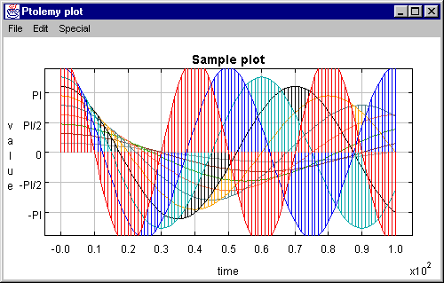

|  |
Authors Edward A. Lee Christopher Hylands
Contributors
|
xgraph.
There is a set of demonstrations of these classes. The main class implementing the plotter component is Plot. It is derived from PlotBox, which provides only the axes and decorations of the plot. This is implemented in a base class so that it can be reused for different kinds of plots. Live (animated) data plots are supported by the PlotLive class. This class is abstract; a derived class must be created to generate the data to plot (or collect it from some other application).
TwoPlotExample is a very simple sample Ptplot application.
A more complex application is implemented by the
PlotApplication class.
The PlotApplication class
includes support for printing and generating HTML for use with the
Plot applet. The ptplot
shell script starts up PlotApplication from a Unix
shell prompt.
Backward compatibility with the C pxgraph program
is provided by the
Pxgraph class.
This code owes a heavy debt to David
Harrison, the original author of xgraph, which runs under
the X window system on Unix platforms. An extension to
xgraph called pxgraph, written by Joe Buck,
reads binary files as well as ASCII. For compatibility with these
programs, we have provided a Bourne Shell script called
pxgraph that is a drop-in replacement for either
xgraph or pxgraph. Unlike the original
program, however, the Java implementation does not depend on the X
window system. We have provided a DOS batch file called
pxgraph.bat that brings pxgraph capability
to Windows platforms.
http://ptolemy.eecs.berkeley.edu/java/ptplot